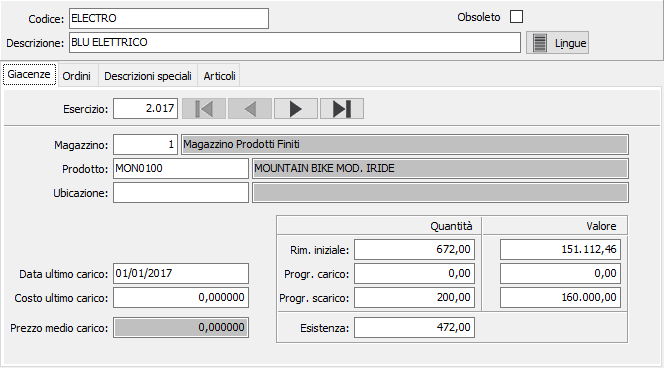

Giacenze
La sezione presenta, per la variante in esame, il codice, la descrizione ed i valori progressivi di esistenza iniziale, scarichi e carichi per i vari esercizi ed i vari magazzini gestiti.
Agendo sulle freccette della tool bar è possibile scorrere le varianti esistenti in archivio, agendo invece sulle freccette del pannello Giacenze, è possibile selezionare esercizi precedenti o successivi per visualizzare i valori di tali esercizi.
I valori presentati nei vari campi del pannello giacenze non sono modificabili da parte dell’utente, in quanto generati dai movimenti di magazzino esistenti. Il significato di ciascun campo risulta evidente grazie all’etichetta che lo precede.

CODICE: campo alfanumerico che individua la variante.
DESCRIZIONE: campo alfanumerico per descrivere la variante.
LINGUA: bottone che attiva la tabella di memorizzazione della descrizione della variante in esame nelle varie lingue utilizzate dall’utente.
OBSOLETO: flag attivabile dall’utente per inibire il possibile utilizzo dell’elemento di tabella in esame nelle successive transazioni.